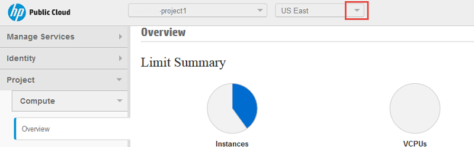
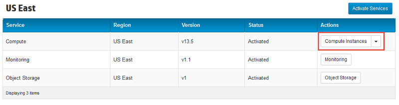
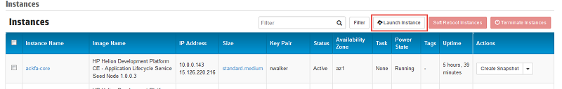
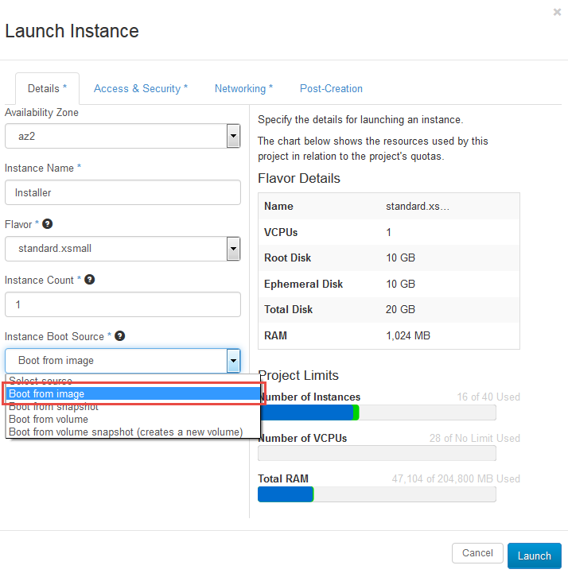
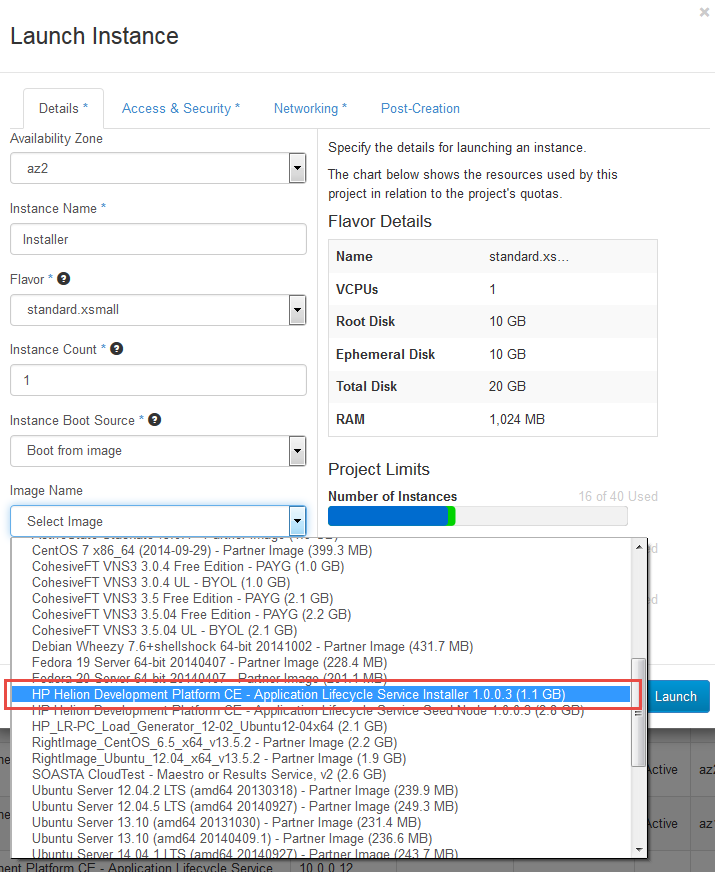
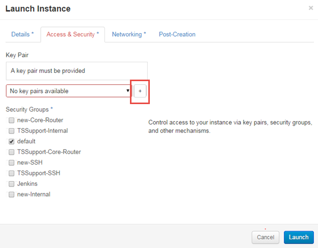
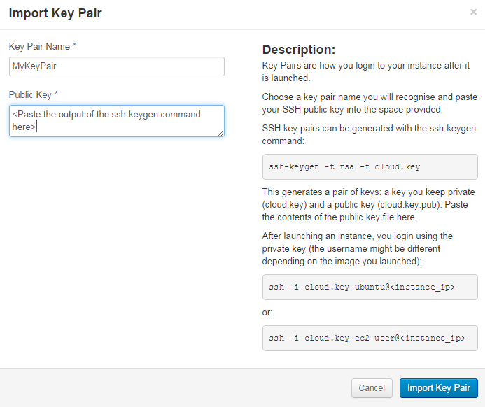
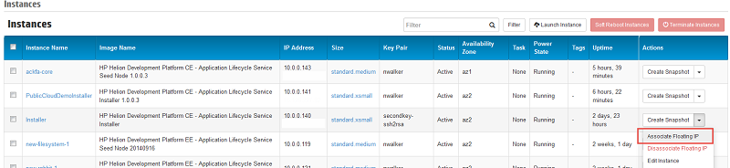

HP Helion 1.0 Development Platform: Quick Start Developer Trial
This document explains the process to install and configure Helion Development Platform Application Lifecycle Service (ALS) in the public cloud. This is the fastest way to create a sandbox environment to evaluate the HP Helion Development Platform.
ALS Cluster creation is enabled by using an ALS Constructor, a Virtual Machine (VM) image pre-loaded with configuration and orchestration software. This image is available in every public cloud account.
After you create your public cloud account, you will use the ALS Constructor to configure and create your cluster. At the end of the process, you will have an endpoint URL that you can use to deploy your apps. The document covers the following sections:
Prerequisites
Before you start the installation and configuration process, ensure that you have a user account on an HP Helion Public Cloud. Take advantage of the trial offer to get started at no cost. You will be asked to provide a phone number for verification and a credit card to keep on file. Please keep your username and password handy as you will be entering them in the steps below.
Installing your Quick Start Developer Trial
- Log into the Horizon Console using the HP Helion Public Cloud username and password that you created during signup.
- Create a new project, if you don't already have one.
- If you have not already created a network with public internet access inside of your account, then you will need to do so as your ALS cluster will need such a network. This step only needs to be performed one time as part of the initial configuration of your HP Helion Public Cloud account. To create a network, please follow these directions.
Change to the US East Region in the Horizon Console.
Create a new Compute instance in the US East region.
Click on the + Launch Instance button to open the launch instance dialog.
On the resulting dialog, fill out the details and select Boot from image to enable selection of the Constructor VM. The selections shown below are good defaults.
Select the HP Helion Development Platform Application Lifecycle Service Installer option from the images list. Note that the version number at the end of the image name may vary as newer versions are released.
Next, you will need to provide a key pair for this VM in the Access & Security section. If a key pair has already been created and imported, skip to step 10. If a key pair has not been created and imported, create one:
- By clicking on the + (plus) button and following the instructions in the resulting dialog (pictured below).
 - By using a tool such as PuTTY (on a PC) and following the instructions here.
- By clicking on the + (plus) button and following the instructions in the resulting dialog (pictured below).
- Click Import Key Pair and then the Launch button.
For more details on key pairs in the public cloud, please read the HPCloud Community article.
 Now we can assign a floating IP address to the installer VM that you just created. You can do that from the More button under Actions. Choose any available IP address in the resulting dialog and make note of it for the next step. When you're done, click the Associate button.
SSH into the installer VM with the user debian and the SSH key you selected when you started the virtual machine. You can do that on a Mac/UNIX machine with the ssh command. In this example, you named your private key cloud.key and you chose an IP address of 15.126.234.185
ssh -i cloud.key debian@15.126.234.185Run this command to change the permissions on your keypair file to protect it:
sudo chmod 400 KEYPAIRRun the configuration script to create your cluster.conf configuration file using the following command:
python ./trial_configure.pyYou'll be prompted for configuration information that will be used to build your developer trial.
- OpenStack® Username This is the username for your HP Public Cloud account.
- OpenStack Password This is the password for your HP Public Cloud account.
- Tenant ID If you have multiple values, select one.
- Network ID If you have multiple values, select one.
- Image ID If you have multiple values, select one.
- Cluster Prefix Give your developer trial a prefix.
- Services Enter a comma-separated list of services (e.g. mysql, redis, rabbit).
- First user's admin email The login account for your new developer trial.
- First user's password The password for your new developer trial.
After you have answered the script's question, the values are saved to the cluster.conf configuration file on the local filesystem. The script will then ask if you want to proceed with the creation of your trial cluster.
- If you specify Y, the cluster creation process will begin.
If you specify N, you will be returned to the OS prompt. You can subsequently run the cluster creation by using the following command:
python ./assemble.py
After the assemble script creates the cluster, it presents you with the ALS Console URL with which you can login to your browser. This URL will have the form api.
.xip.io For example, api.255.255.255.255.xip.io
The cluster will be running on a single virtual machine in your account that will have a name ending in "-core" prefixed with 5 random characters. For example: acxpq-core.If an error occurs or you want to terminate the cluster, run the following command. This command deletes your VMs, releases the floating IP addresses, and removes the cluster security groups:
python ./assemble.py -DOnce your install is complete, and if you do not want to use the automated tear-down capabilities of the Constructor, you can terminate the Constructor VM.
After you install
Once the installation completes, you can load the ALS Console at the URL obtained in step 15 using the first username and first password you specified in step 13. After you log into the Console, you can access the ALS User Documentation for instructions on how to create users and deploy applications.
To keep the quick-start image size as small as possible, the Helion command-line interface (CLI) is available as a separate download. Download and install the version appropriate for your operating system.
You may be presented with text that warns or notes that the site has a self-signed certificate or, when loaded in a browser, you may get a display indicating that the site is not trusted. These can be safely ignored.
Your infrastructure is now ready for development. You can find some simple sample development tasks in our Application Developer section. This area will be updated continuously with more languages and samples, so please stop by often to see the newest content.